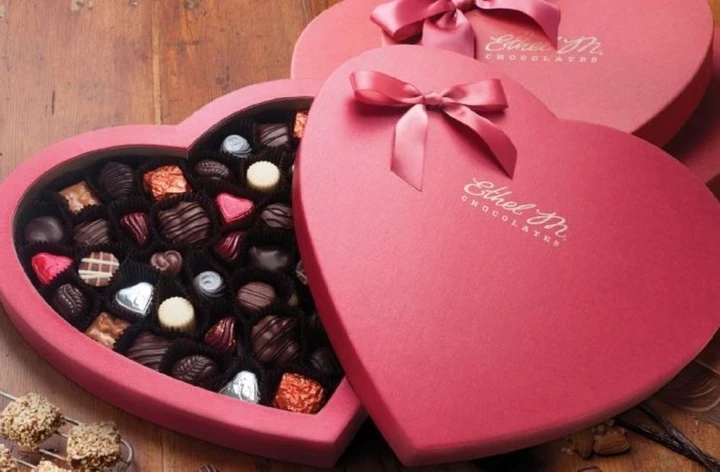
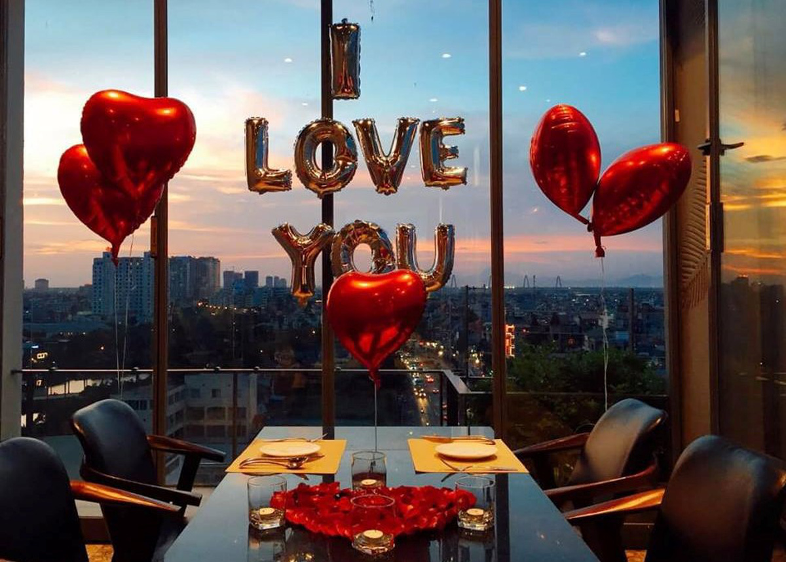
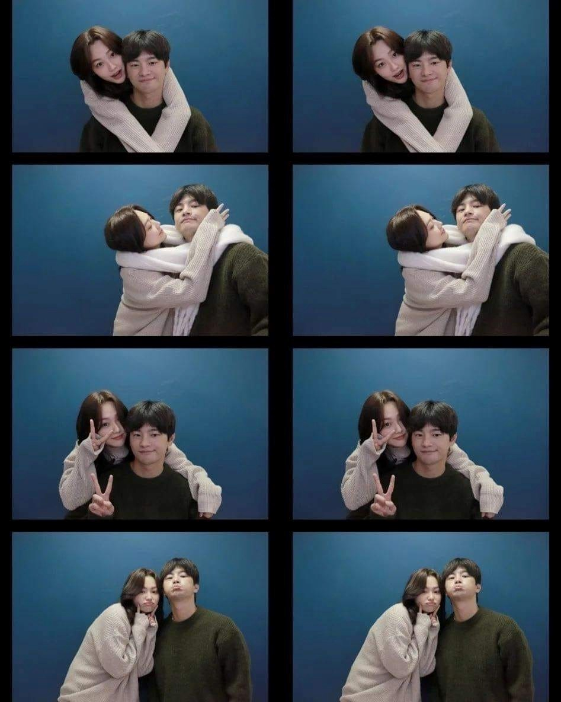

Những hoạt động thú vị trong ngày Valentine
Tặng quà có thể xem là thứ mọi người nghĩ đến đầu tiên vào những dịp Valentine. Quà tặng cũng được xem là cách thể hiện tình cảm và trân trọng đối phương gần gũi và nhất. Chọn quà tặng tùy vào mỗi người sẽ khác nhau, có người chọn hoa, chocolate hay thiệp, cũng có người chọn quần áo, mỹ phẩm, trang sức,... Món quà ý nghĩa là món quà được người mình yêu lựa chọn và trao gửi yêu thương.

Thay đổi không khí cùng nhau đến một nơi mới để thư giãn và tận hưởng cũng là một trong những điều tuyệt vời các cặp đôi. Sau những ngày bộn bề với công việc, Valentine là cơ hội để những đôi vợ chồng hay tình nhân cùng nhau nghỉ ngơi và 'hâm nóng' tình cảm. Đó có thể là một chuyến đi dài và xa nhưng nếu quá bận rộn bạn có thể chọn địa điểm gần hơn để dễ dàng di chuyển đỡ mất nhiều thời gian. Có lẽ với những cặp đôi đang yêu nhau thì việc đi đâu sẽ chẳng quan trọng đi cùng người bạn đời của mình đúng không nào?
Đã bao lâu rồi bạn chưa ăn tối ở một nơi lãng mạn cùng người ấy? Nếu đã lâu rồi thì Valentine này là một dịp tuyệt vời để 2 người cùng nhau trò chuyện, tâm sự mọi điều. Đó có thể là một nhà hàng trang trí đẹp với khung cảnh lãng mạn cũng có thể là bữa ăn tự nấu ở nhà nhưng cầu kỳ và đặc biệt hơn. Hãy lưu ý ngay và lên lịch ăn tối cùng nửa kia nhé!

Lần cuối 2 bạn chụp ảnh cùng nhau là khi nào? Valentine khoe ảnh bên vợ / chồng, bên người yêu cũng là cách để chúng ta chia sẻ và ghi lại khoảnh khắc hạnh phúc bên nhau. Một hành động nhỏ thôi nhưng vô cùng ý nghĩa, bức ảnh sẽ là kỷ niệm của 1 năm sau hay nhiều năm sau nữa. Mặc đồ đôi chụp ảnh cùng nhau cũng là một tips làm tăng thêm sự dễ thương của 2 bạn. Nhớ hãy chụp một bức ảnh cùng người ấy nhé!

Thành viên
Bùi Quang Kiệt
Chu Thiện Bách
Nguyễn Phan Quý
Phạm Ngọc Nam
buiquangkietlac@.gmail.com
thuyết trình canva